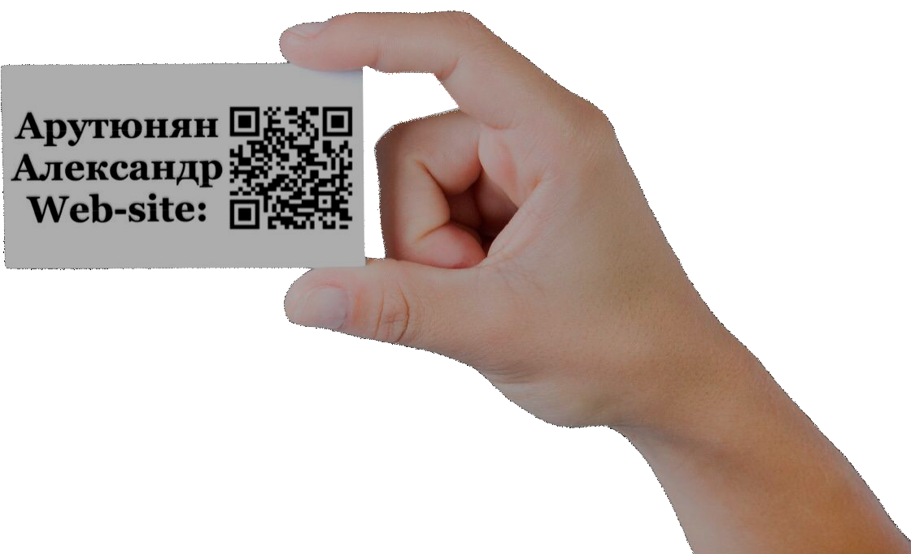
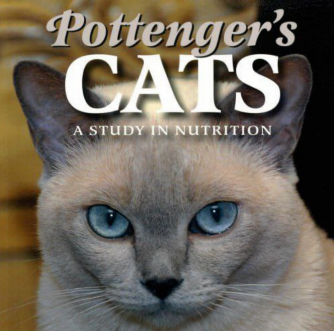
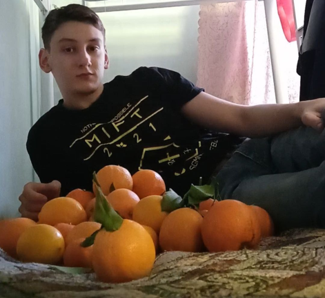

Предисловие к блогу: “Я не копирайтер и
не бизнесмен. Я обычный человек, которому повезло
докапаться до сути и который хочет немного об этом рассказать”.
Привет, меня зовут Александр Арутюнян.
Я сделал этот сайт в качестве своей
визитки и блога.
Узнать больше

Визитка используется для общего
ознакомления со мной, например, заказчиком
какой-либо услуги или любым человеком,
которого я заинтересовал.
В блоге я рассказываю о научных исследованиях,
результаты которых можно внедрить в свою жизнь.
Также там будет появляться философия,
чуть-чуть программирования, описание
путешествий и, очевидно, многое другое.
Лучшие посты
Я отредактировал автоматизированный перевод
отрывка из книги Ааджонуса Вондерпланица "Мы хотим жить".
Цитата из переведенного отрывка:
«Опыт, который изменил меня, был необычным. После двух
с половиной лет путешествия на велосипеде я разочаровался.
Я стал слишком худым и с каждым днем слабел все больше.
Но я не хотел возвращаться к
цивилизации с ее загрязнением
и отношением к выживанию наиболее приспособленных“.
Читать этот пост

Человек не на столько далёк в своей физиологии от кошки, чтобы такая, как в эксперименте Поттенджера, тенденция была маловероятна для него.
Это открытие, которое избавит и уже избавляет множество людей на планете от их некоторых проблем, депрессий и несчастий.
Почему же в этой области так мало современных исследований?
Читать этот пост
Лучшие посты
Я отредактировал автоматизированный перевод
отрывка из книги Ааджонуса Вондерпланица "Мы хотим жить".
Цитата из переведенного отрывка:
«Опыт, который изменил меня, был необычным. После двух
с половиной лет путешествия на велосипеде я разочаровался.
Я стал слишком худым и с каждым днем слабел все больше.
Но я не хотел возвращаться к
цивилизации с ее загрязнением
и отношением к выживанию наиболее приспособленных“.
Читать этот пост
Человек не на столько далёк в своей физиологии от кошки, чтобы такая, как в эксперименте Поттенджера, тенденция была маловероятна для него.
Это открытие, которое избавит и уже избавляет множество людей на планете от их некоторых проблем, депрессий и несчастий.
Почему же в этой области так мало современных исследований?
Читать этот пост
Свежие посты

Апельсины не вызывают аллергию, они содержат энзимы,
которые запускают процесс детоксикации через
лифматическую систему: нос (сопли), кожу
(её раздувание, покраснения).
Эти токсины попали
в организм из окружающей среды и, по причине
невозможности использования в качестве энергии,
связались с жирами тела...
Читать этот пост
Свежие посты
Апельсины не вызывают аллергию, они содержат энзимы,
которые запускают процесс детоксикации через
лифматическую систему: нос (сопли), кожу
(её раздувание, покраснения).
Эти токсины попали
в организм из окружающей среды и, по причине
невозможности использования в качестве энергии,
связались с жирами тела...
Читать этот пост